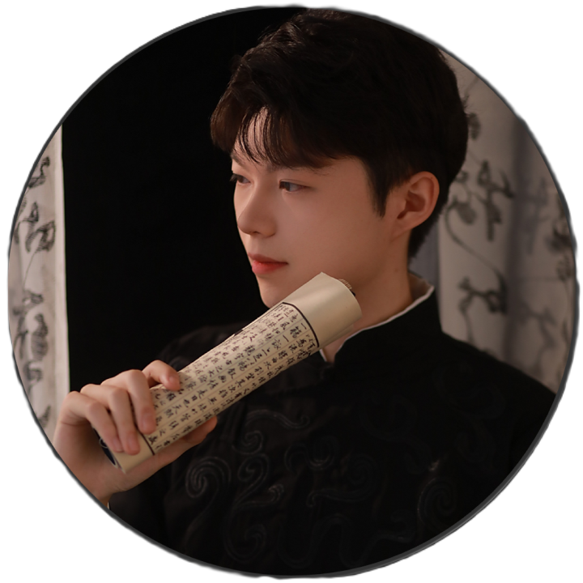

Education
- 2025—Present Ph.D., Electrical and Electronic Engineering Nanyang Technological University
- 2021—2025 B.Eng., Elite Program of Mechanical Engineering Tsinghua University
Ph.D. Student · Robotics & AI
Xue Yuquan is a Ph.D. student at Nanyang Technological University (NTU), Singapore, advised by Prof. Ziwei Wang in PINELab.

Profile
He received his B.Eng. degree from Tsinghua University (THU), China. His research interests include robotics, artificial intelligence, reinforcement learning, and multimodal learning.
Research
Selected work in robot learning and data-efficient manipulation.
Recognition
Academic, creative, and engineering distinctions.